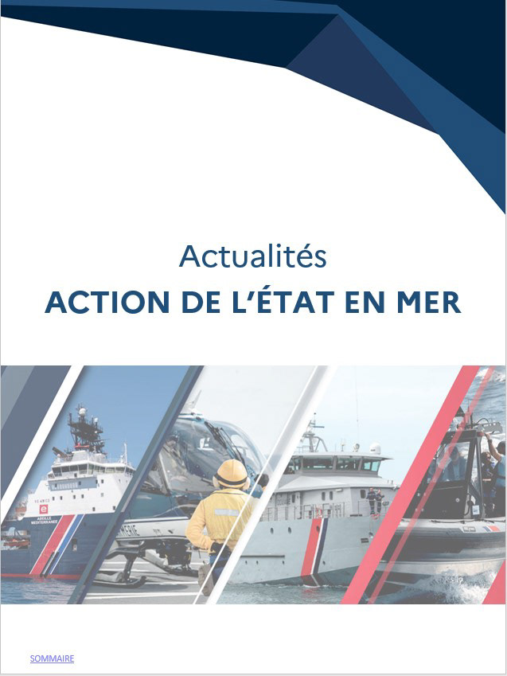
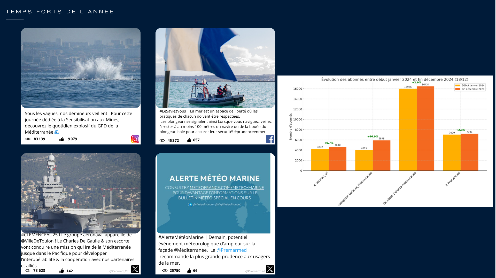
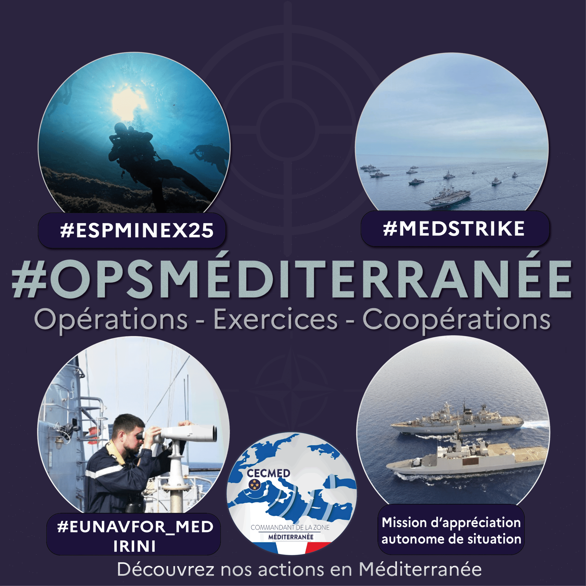

Marine nationale / Prefecture maritime de la Mediterranee
Experience Professionnelle
Cette page rassemble les contenus issus du dossier armee: affiches, revue de presse, publications reseaux sociaux et productions video integrees directement au portfolio.
Prefecture maritime de la Mediterranee
Support de communication
Affiches et campagnes d'information a destination des familles et des publics, avec un message direct et lisible.

Veille institutionnelle
Revue de presse
Syntheses editoriales et pages de veille preparees pour une lecture rapide des actualites et des sujets suivis.

Formats reseaux
Reseaux sociaux
Publications, stories, carrousels et bilans visuels adaptes aux usages des comptes institutionnels.

Formats complementaires
Visuels & infographies
Exports, variantes de mise en page et visuels complementaires utilises dans les campagnes et les publications.
Montage / teasers / reels
Videos & formats courts
L'ensemble des fichiers video du dossier armee est integre dans une page dediee, avec reportages, capsules courtes, reels et exports complementaires.